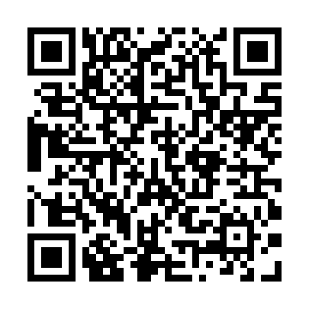

Tamil Cultural Association, IIT Bombay
Tamil Fest 2022 - Tickets
April 16, 2022 - LT PCSA, IIT Bombay
Coupon Code: swt38nd40f
Name: Alekh V
Mobile Number: 9567499879
Mail Id: alekhv@iitb.ac.in
Category: Faculty/Non-Teaching Staff
Type: Only for Tamizh Fest 2022
Coupon (Self): 1
Coupon (Guest): 1
Tot. Coupons: 2
Dinner Slot: 9:30 PM
Contribution:
Total Paid: 620
